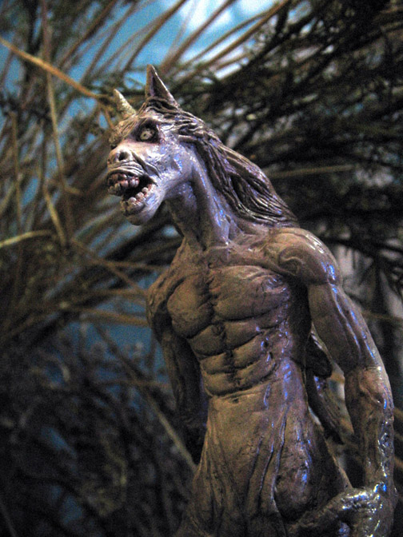

TIKBALANG
Tikbalang or tigbalang (demon horse) is a half-man and half-horse creature. It has a horse's head, the body of a human but with the feet of the horse. It travels at night to rape female mortals. The raped women will then give birth to more tikbalang.
Tikbalangs are also believed to cause travelers to lose their way particularly in mountainous or forest areas. Tikbalangs are very playful with people, and they usually make a person imagine things that aren't real. Sometimes a Tikbalang will drive a person crazy.
Legends
Legends say that when rain falls while the sun is shining or in a clear sky, there is a wedding between two Tikbalangs.
Superstitions
Tikbalangs are said to scare travelers and lead them astray. Tikbalangs play tricks on travelers such that they keep on returning to an arbitrary path no matter how far he goes or where he turns. Supposedly this is counteracted by wearing one's shirt inside out.[3] Another countermeasure is to ask permission out loud to pass by or, not to produce too much noise while in the woods in order not to offend or disturb the tikbalang.
Taming a tikbalang
By one account a tikbalang has a mane of sharp spines, with the three thickest of these being of particular importance. A person who obtains one of these spines can use them as an anting-anting (talisman) in order to keep the tikbalang as his servant. The tikbalang must first be subdued, however, by leaping onto it and tying it with a specially-prepared cord. The would-be-tamer must then hang on while the creature flies through the air, fighting madly to dislodge its unwelcome rider, until it is exhausted and acknowledges its defeat.